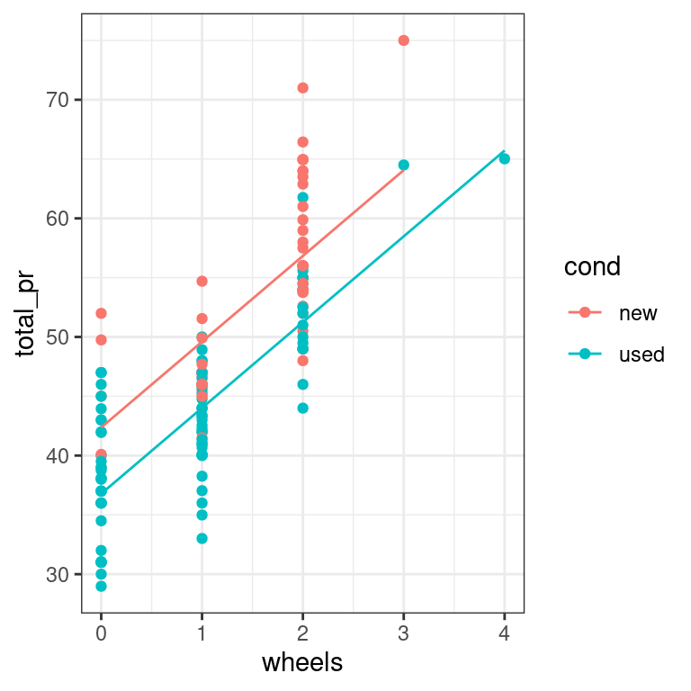
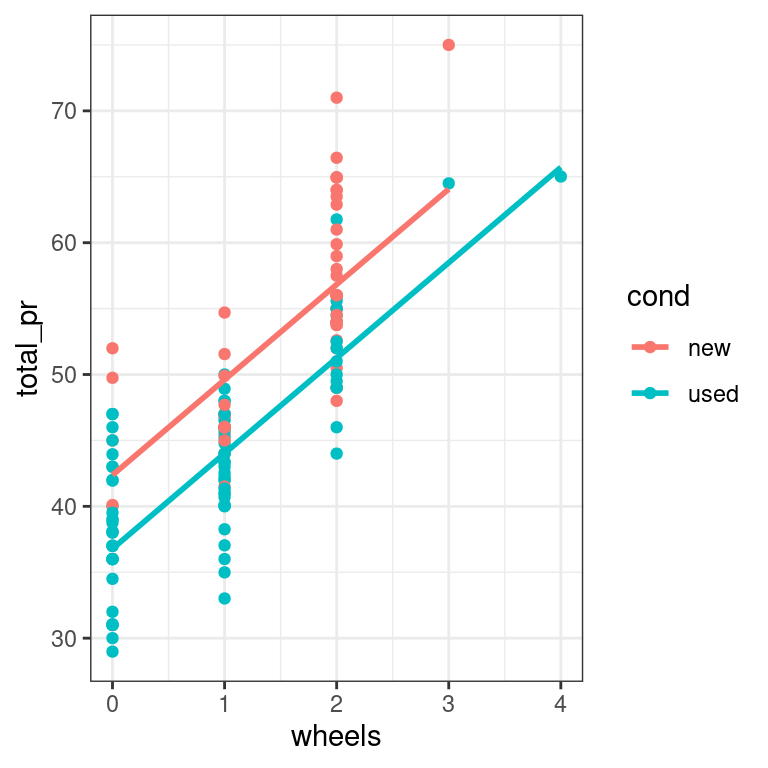
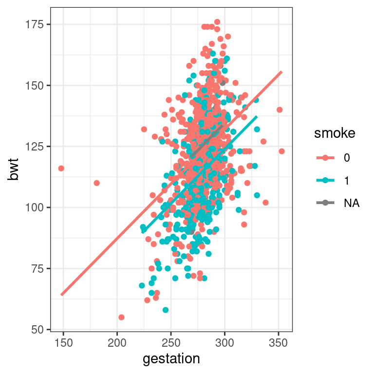

Chapter 2 Parallel Slopes
In this chapter you’ll learn about the class of linear models called “parallel slopes models.” These include one numeric and one categorical explanatory variable.
What if you have two groups?
2.1 Fitting a parallel slopes model
We use the lm() function to fit linear models to data. In this case, we want to understand how the price of mariokart games sold at auction varies as a function of not only the number of wheels included in the package, but also whether the item is new or used. Obviously, it is expected that you might have to pay a premium to buy these new. But how much is that premium? Can we estimate its value after controlling for the number of wheels?
We will fit a parallel slopes model using lm(). In addition to the data argument, lm() needs to know which variables you want to include in your regression model, and how you want to include them. It accomplishes this using a formula argument. A simple linear regression formula looks like y ~ x, where y is the name of the response variable, and x is the name of the explanatory variable. Here, we will simply extend this formula to include multiple explanatory variables. A parallel slopes model has the form y ~ x + z, where z is a categorical explanatory variable, and x is a numerical explanatory variable.
The output from lm() is a model object, which when printed, will show the fitted coefficients.
Exercise
- The dataset
mariokartis already loaded for you. Explore the data usingglimpse()orstr().
Rows: 143
Columns: 12
$ id <dbl> 150377422259, 260483376854, 320432342985, 280405224677, 17…
$ duration <int> 3, 7, 3, 3, 1, 3, 1, 1, 3, 7, 1, 1, 1, 1, 7, 7, 3, 3, 1, 7…
$ n_bids <int> 20, 13, 16, 18, 20, 19, 13, 15, 29, 8, 15, 15, 13, 16, 6, …
$ cond <fct> new, used, new, new, new, new, used, new, used, used, new,…
$ start_pr <dbl> 0.99, 0.99, 0.99, 0.99, 0.01, 0.99, 0.01, 1.00, 0.99, 19.9…
$ ship_pr <dbl> 4.00, 3.99, 3.50, 0.00, 0.00, 4.00, 0.00, 2.99, 4.00, 4.00…
$ total_pr <dbl> 51.55, 37.04, 45.50, 44.00, 71.00, 45.00, 37.02, 53.99, 47…
$ ship_sp <fct> standard, firstClass, firstClass, standard, media, standar…
$ seller_rate <int> 1580, 365, 998, 7, 820, 270144, 7284, 4858, 27, 201, 4858,…
$ stock_photo <fct> yes, yes, no, yes, yes, yes, yes, yes, yes, no, yes, yes, …
$ wheels <int> 1, 1, 1, 1, 2, 0, 0, 2, 1, 1, 2, 2, 2, 2, 1, 0, 1, 1, 2, 2…
$ title <fct> "~~ Wii MARIO KART & WHEEL ~ NINTENDO Wii ~ BRAND NEW …# Or
# str(mariokart)
# Data munging to agree with DataCamp mario_kart
mario_kart <- mariokart %>%
filter(total_pr < 100)
str(mario_kart)tibble [141 × 12] (S3: tbl_df/tbl/data.frame)
$ id : num [1:141] 1.5e+11 2.6e+11 3.2e+11 2.8e+11 1.7e+11 ...
$ duration : int [1:141] 3 7 3 3 1 3 1 1 3 7 ...
$ n_bids : int [1:141] 20 13 16 18 20 19 13 15 29 8 ...
$ cond : Factor w/ 2 levels "new","used": 1 2 1 1 1 1 2 1 2 2 ...
$ start_pr : num [1:141] 0.99 0.99 0.99 0.99 0.01 ...
$ ship_pr : num [1:141] 4 3.99 3.5 0 0 4 0 2.99 4 4 ...
$ total_pr : num [1:141] 51.5 37 45.5 44 71 ...
$ ship_sp : Factor w/ 8 levels "firstClass","media",..: 6 1 1 6 2 6 6 8 5 1 ...
$ seller_rate: int [1:141] 1580 365 998 7 820 270144 7284 4858 27 201 ...
$ stock_photo: Factor w/ 2 levels "no","yes": 2 2 1 2 2 2 2 2 2 1 ...
$ wheels : int [1:141] 1 1 1 1 2 0 0 2 1 1 ...
$ title : Factor w/ 80 levels " Mario Kart Wii with Wii Wheel for Wii (New)",..: 80 60 22 7 4 19 34 5 79 70 ...- Use
lm()to fit a parallel slopes model for total price as a function of the number of wheels and the condition of the item. Use the argumentdatato specify the dataset you’re using.
Call:
lm(formula = total_pr ~ wheels + cond, data = mario_kart)
Coefficients:
(Intercept) wheels condused
42.370 7.233 -5.585 Reasoning about two intercepts
The mariokart data contains several other variables. The total_pr, start_pr, and ship_pr variables are numeric, while the cond and stockPhoto variables are categorical.
Which formula will result in a parallel slopes model?
total_pr ~ start_pr + ship_prcond ~ start_pr + stock_photototal_pr ~ ship_pr + stock_photototal_pr ~ cond
Visualizing parallel slopes models
2.2 Using geom_line() and augment()
Parallel slopes models are so-named because we can visualize these models in the data space as not one line, but two parallel lines. To do this, we’ll draw two things:
a scatterplot showing the data, with color separating the points into groups
a line for each value of the categorical variable
Our plotting strategy is to compute the fitted values, plot these, and connect the points to form a line. The augment() function from the broom package provides an easy way to add the fitted values to our data frame, and the geom_line() function can then use that data frame to plot the points and connect them.
Note that this approach has the added benefit of automatically coloring the lines appropriately to match the data.
You already know how to use ggplot() and geom_point() to make the scatterplot. The only twist is that now you’ll pass your augment()-ed model as the data argument in your ggplot() call. When you add your geom_line(), instead of letting the y aesthetic inherit its values from the ggplot() call, you can set it to the .fitted column of the augment()-ed model. This has the advantage of automatically coloring the lines for you.
Exercise
The parallel slopes model mod relating total price to the number of wheels and condition is already in your workspace.
augment()the modelmodand explore the returned data frame usingglimpse(). Notice the new variables that have been created.
Rows: 141
Columns: 9
$ total_pr <dbl> 51.55, 37.04, 45.50, 44.00, 71.00, 45.00, 37.02, 53.99, 47.…
$ wheels <int> 1, 1, 1, 1, 2, 0, 0, 2, 1, 1, 2, 2, 2, 2, 1, 0, 1, 1, 2, 0,…
$ cond <fct> new, used, new, new, new, new, used, new, used, used, new, …
$ .fitted <dbl> 49.60260, 44.01777, 49.60260, 49.60260, 56.83544, 42.36976,…
$ .resid <dbl> 1.9473995, -6.9777674, -4.1026005, -5.6026005, 14.1645592, …
$ .hat <dbl> 0.02103158, 0.01250410, 0.02103158, 0.02103158, 0.01915635,…
$ .sigma <dbl> 4.902339, 4.868399, 4.892414, 4.881308, 4.750591, 4.899816,…
$ .cooksd <dbl> 1.161354e-03, 8.712334e-03, 5.154337e-03, 9.612441e-03, 5.5…
$ .std.resid <dbl> 0.40270893, -1.43671086, -0.84838977, -1.15857953, 2.926332…- Draw the scatterplot and save it as
data_spaceby passing theaugment()-ed model toggplot()and usinggeom_point().
# scatterplot, with color
data_space <- ggplot(data = augmented_mod,
aes(x = wheels, y = total_pr,
color = cond)) +
geom_point()- Use
geom_line()once to add two parallel lines corresponding to our model.

2.2.1 An alternative approach using geom_parallel_slopes() from moderndive
library(moderndive)
ggplot(data = mario_kart, aes(x = wheels, y = total_pr, color = cond)) +
geom_point() +
geom_parallel_slopes(se = FALSE) +
theme_bw()
Interpreting parallel slopes coefficients
Intercept interpretation
Recall that the cond variable is either new or used. Here are the fitted coefficients from your model:
Call:
lm(formula = total_pr ~ wheels + cond, data = mario_kart)
Coefficients:
(Intercept) wheels condused
42.370 7.233 -5.585 Choose the correct interpretation of the coefficient on condused:
For each additional wheel, the expected price of a used mariokart is $5.58 lower.
The expected price of a used mariokart is $5.58 less than that of a new one with the same number of wheels.
The expected price of a new mariokart is $5.58 less than that of a used one with the same number of wheels.
The used mariokarts are always $5.58 cheaper.
Common slope interpretation
Recall the fitted coefficients from our model:
Call:
lm(formula = total_pr ~ wheels + cond, data = mario_kart)
Coefficients:
(Intercept) wheels condused
42.370 7.233 -5.585 Choose the correct interpretation of the slope coefficient:
For each additional wheel, the expected price of a mariokart increases by $7.23 regardless of whether it is new or used.
For each additional wheel, the expected price of a new mariokart increases by $7.23.
The expected price of a used mariokart is $5.59 less than that of a new one with the same number of wheels.
You should always expect to pay $42.37 for a mariokart.
Three ways to describe a model
2.3 Syntax from math
The babies data set contains observations about the birthweight and other characteristics of children born in the San Francisco Bay area from 1960–1967.
We would like to build a model for birthweight as a function of the mother’s age and whether this child was her first (parity == 0). Use the mathematical specification below to code the model in R.
\[birthweight=\beta_0 + \beta_1 \cdot age + \beta_2 \cdot parity + \varepsilon\]
Exercise
The birthweight variable is recorded in the column bwt.
- Use
lm()to build the parallel slopes model specified above. It’s not necessary to usefactor()in this case as the variableparityis coded using binary numeric values.
Call:
lm(formula = bwt ~ age + parity, data = babies)
Coefficients:
(Intercept) age parity
118.27782 0.06315 -1.65248 2.4 Syntax from plot
This time, we’d like to build a model for birthweight as a function of the length of gestation and the mother’s smoking status. Use Figure 2.1 to inform your model specification.
ggplot(data = babies, aes(x = gestation, y = bwt, color = factor(smoke))) +
geom_point(alpha = 0.5) +
theme_bw()
Figure 2.1: bwt versus gestation
Exercise
- Use
lm()to build a parallel slopes model implied by the plot. It’s not necessary to usefactor()in this case either.
Call:
lm(formula = bwt ~ gestation + smoke, data = babies)
Coefficients:
(Intercept) gestation smoke
-0.9317 0.4429 -8.0883 babies <- babies %>%
mutate(smoke = factor(smoke))
ggplot(data = babies, aes(x = gestation, y = bwt, color = smoke)) +
geom_point() +
geom_parallel_slopes(se = FALSE) +
theme_bw()